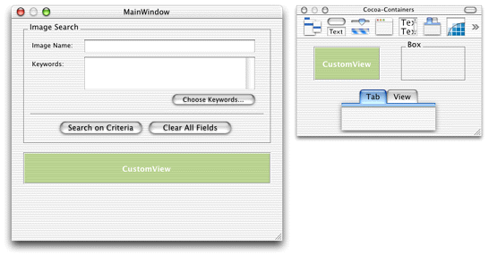
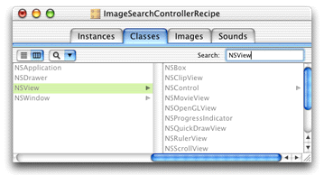
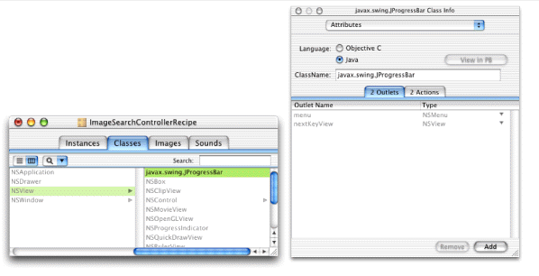
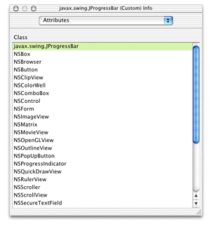
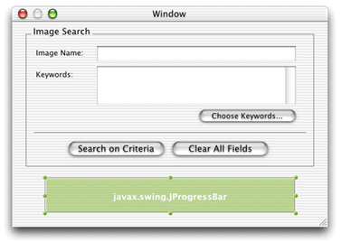
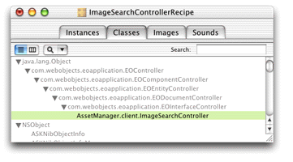
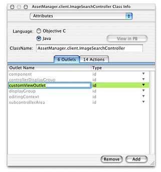
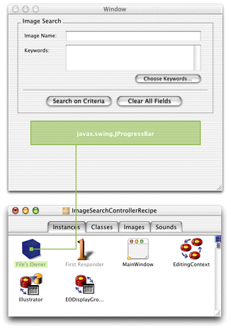
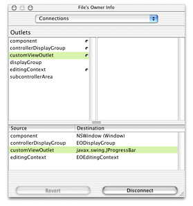

Problem: You want to add an unsupported
view in an interface file such as javax.swing.JProgressBar.
Solution: Place a custom view object and connect it to an outlet in File's Owner.
In an Interface Builder file, place a custom view object in the main window. You can find this object in the Cocoa-Containers palette. Figure 15-1shows this palette and a custom view placed in the main window.
Figure 15-1 Custom view object in window
Next, you need to assign the custom view to an NSView subclass. Before you can do this, you need to create an NSView subclass. Switch to the Classes pane in the nib file window and enter "NSView" in the Search field as shown in Figure 15-2.
Figure 15-2 Find NSView in class hierarchy
Select NSView if it is not already selected and press Return to subclass it. In the Info window, select Java as the language for the subclass. Then, provide a fully qualified name for the subclass. If the view represents a Swing class such as JProgressBar, use "javax.swing.JProgressBar" as shown in Figure 15-3. If the view represents a custom Swing subclass, specify the fully-qualified name of that subclass.
Figure 15-3 Name the custom view class
Next, you need to associate the custom view you placed in
the window with the new NSView subclass. Select the custom view
widget in the main window and bring up the Attributes pane of the
Info window. Select javax.swing.JProgressBar,
as shown in Figure 15-4.
Figure 15-4 Associate custom view with NSView subclass
The name in the custom view should then change to the name of the new class, as shown in Figure 15-5.
Figure 15-5 Custom view as NSView subclass
Now you need to add an outlet to the interface file's File's
Owner object for the custom view. This gives you programmatic access
to the widget in the nib file's controller class, which allows
you to query and change the widget's attributes. In the Classes
pane of the nib file window, view the class hierarchy vertically
and disclose the list starting with java.lang.Object as
far as you can, as shown in Figure 15-6.
Figure 15-6 File's Owner's class
Select the last class in the hierarchy and bring up the Info window. Add an outlet to the class called "customViewOutlet," as shown in Figure 15-7.
Figure 15-7 Add outlet to interface file
Next, you need to connect the custom view to the outlet you just created. Switch to the Instances pane of the nib file window and Control-drag from File's Owner to the custom view in the main window as shown in Figure 15-8.
Figure 15-8 Connect new outlet to custom view
Then in the Connections Pane of the Info window, select customViewOutlet and
click Connect. The Connections pane of the Info window for File's
Owner should now appear as shown in Figure 15-9.
Figure 15-9 File's Owner's attributes
Save the interface file and open its controller class (.java file)
in Project Builder. Add an instance variable for the outlet you
added:
public JProgressBar customViewOutlet;
You now have a JProgressBar widget in your interface file.
You can set its value by invoking customViewOutlet.setValue(int
value) in the controller class. However, don't attempt
to invoke methods on the widget in the interface controller's
constructors as it may not be initialized at that point. Rather,
override controllerDidLoadArchive as described
in "Loading the Image" or check
to see if the component is initialized by invoking isComponentPrepared.